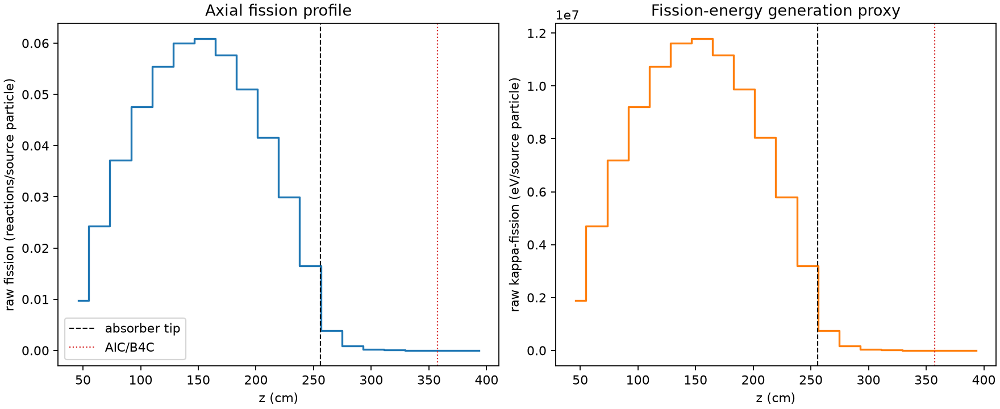
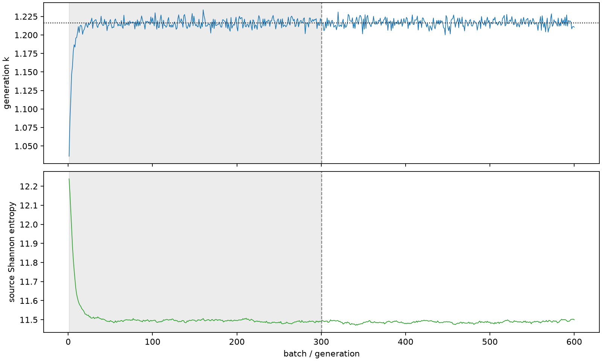

| field | value |
|---|---|
| experiment | V2-STAGE_256_OGRENCI_02-0019 |
| k | 1.2160814747912727 |
| MC standard error | 0.0001803397107665898 |
| seconds | 941.5744426480014 |
| acceptance | not_assessed |
| convergence | review_required |
Completed is output integrity only; physical and statistical review required. Zero tallies do not prove zero production or zero uncertainty.
| diagnostic | value |
|---|---|
| geometric fuel voxels | 5280 |
| zero fission tally voxels | 278 |
| low signal fuel voxels | 1233 |
| low signal fission share | 0.00010246328507807304 |
| low signal kappa share | 0.00010250104662313043 |
| important fission share | 0.9500137982179804 |
| previous filter included | 4047 |
| duration estimate s | 1562.5173488400023 |
| actual minus estimate s | -620.9429061920009 |
| fission relative MC error | statistics |
|---|---|
| all_geometric_fuel | {"voxels": 5280, "positive_mean_voxels": 5002, "zero_mean_voxels": 278, "undefined_relative_error_voxels": 278, "median": 0.011005090166947333, "p95": 0.806307340619987, "maximum": 1.0000000000000002} |
| low_signal | {"voxels": 1233, "positive_mean_voxels": 955, "zero_mean_voxels": 278, "undefined_relative_error_voxels": 278, "median": 0.5304030970621888, "p95": 1.0, "maximum": 1.0000000000000002} |
| important_95pct | {"voxels": 2741, "positive_mean_voxels": 2741, "zero_mean_voxels": 0, "undefined_relative_error_voxels": 0, "median": 0.007876138772466559, "p95": 0.011961990946094965, "maximum": 0.014289655174285133} |
| outside_previous_filter | {"voxels": 1233, "positive_mean_voxels": 955, "zero_mean_voxels": 278, "undefined_relative_error_voxels": 278, "median": 0.5304030970621888, "p95": 1.0, "maximum": 1.0000000000000002} |
| kappa_fission relative MC error | statistics |
|---|---|
| all_geometric_fuel | {"voxels": 5280, "positive_mean_voxels": 5002, "zero_mean_voxels": 278, "undefined_relative_error_voxels": 278, "median": 0.010992899138480653, "p95": 0.8053007819241556, "maximum": 1.0000000000000002} |
| low_signal | {"voxels": 1233, "positive_mean_voxels": 955, "zero_mean_voxels": 278, "undefined_relative_error_voxels": 278, "median": 0.5289976936729909, "p95": 1.0, "maximum": 1.0000000000000002} |
| important_95pct | {"voxels": 2741, "positive_mean_voxels": 2741, "zero_mean_voxels": 0, "undefined_relative_error_voxels": 0, "median": 0.00786716391939452, "p95": 0.011947837562704143, "maximum": 0.014273008035370549} |
| outside_previous_filter | {"voxels": 1233, "positive_mean_voxels": 955, "zero_mean_voxels": 278, "undefined_relative_error_voxels": 278, "median": 0.5289976936729909, "p95": 1.0, "maximum": 1.0000000000000002} |
| axial bin | fission share | kappa-fission share |
|---|---|---|
| 1 | 0.019555481881633013 | 0.01955629664679708 |
| 2 | 0.04896135743556445 | 0.04896102285984692 |
| 3 | 0.0747459926914327 | 0.07474556281143058 |
| 4 | 0.0958011161045126 | 0.09580065285947899 |
| 5 | 0.11157657038256855 | 0.1115760855665605 |
| 6 | 0.12070138284893188 | 0.12070102759727765 |
| 7 | 0.12249727297490245 | 0.12249694216443834 |
| 8 | 0.11600654576838575 | 0.11600567702006334 |
| 9 | 0.1027456025787602 | 0.102745202063615 |
| 10 | 0.08370979822039143 | 0.08370927206944792 |
| 11 | 0.06019354992283452 | 0.0601933236032299 |
| 12 | 0.03316216634982186 | 0.03316245108330514 |
| 13 | 0.007873565105236574 | 0.007875991202537678 |
| 14 | 0.001862213804681584 | 0.001862889391995412 |
| 15 | 0.0004679374787932748 | 0.00046810457772076153 |
| 16 | 0.00010751995092280804 | 0.00010756005409537119 |
| 17 | 2.5266036566723497e-05 | 2.527637816744813e-05 |
| 18 | 5.30306194518396e-06 | 5.305717549578262e-06 |
| 19 | 1.2735239254218258e-06 | 1.2724626649846603e-06 |
| 20 | 8.387818906159427e-08 | 8.38697774710283e-08 |
Histories include the inactive-to-active transition at batch 300. kappa-fission approximates fission energy production, not total heat deposition.

